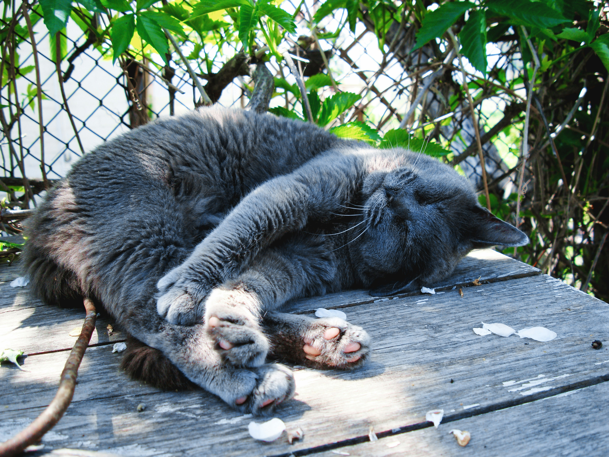

Bacon Q Dog

Bacon Q. Dog is a 9yr old labradoodle. He prefers to spend his days lounging among the three different beds/couches that his family has gifted him. He enjoys a walk or two around the neighborhood, as long as he can pretend that he doesn't see any of the other animals to avoid the embarrassment of not wanting to admit he has no wolf-like skills in chasing them.
At night just as the rest of the family is ready to relax, Bacon suddenly wants to release all of his energy. He will place his toys on a mini couch and frantically drag the couch around, giving his toys "a ride." There is also a lot of rolling. Lots and lots of rolling.
Photo Gallery


Likes
- Belly rubs
- Playing tug-of-war
- Sneaking onto the couch
Orange

Meet Orange, the delightful orange tabby cat with a personality as vibrant as his fur. This charming feline companion is a bundle of joy, with a coat that radiates warmth and playfulness. With bright green eyes that sparkle with curiosity, Orange is always ready for adventure, whether it's chasing after imaginary prey or curling up for a cozy nap in a sunlit spot. His endearing purrs and soft meows make him an instant favorite among those lucky enough to cross paths with him.
Orange's playful nature extends beyond his furry exterior, as he is known for his mischievous antics and love for interactive toys. His favorite pastime includes batting at feathered wands and pouncing on crinkly balls, showcasing a playful spirit that brings joy to anyone in his presence. Whether he's curled up on a windowsill, soaking in the sun, or engaged in a spirited game of hide-and-seek, Orange's irresistible charm leaves a lasting impression on all who encounter this lovable orange tabby cat.
Photo Gallery

Likes
- Chasing sunbeams
- Destroying stuffed toys
- Hide and seek
Kiki

Introducing Kiki, the sleek and mysterious black cat who exudes an air of elegance and mystique. With a coat as dark as midnight, Kiki is a captivating feline companion with a presence that commands attention. Her piercing yellow eyes, like gleaming lanterns in the darkness, reveal a depth of intelligence and curiosity that adds to the allure of this enigmatic black cat. Whether gracefully prowling through the shadows or gracefully perched on a high vantage point, Kiki's mysterious aura is both intriguing and captivating.
Beyond her striking appearance, Kiki is a creature of grace and subtlety. Known for her quiet purrs and gentle head nudges, she forms deep connections with those who take the time to understand her reserved nature. Despite her elegant demeanor, Kiki also has a playful side, delighting in the pursuit of feathered toys and engaging in stealthy games of hide-and-seek. With a heart as dark as her fur and a spirit as lively as the night, Kiki is a black cat whose charm and mystery leave an indelible mark on the hearts of those fortunate enough to share their days with her.
Photo Gallery


Likes
- Snuggles
- Behind the ear scratches
- Blankets
Lemon

Lemon, the enchanting Ragdoll cat, gracefully glides through the household with an air of serene elegance, showcasing her stunning blue eyes and silky, cream-colored fur.
Her gentle demeanor and penchant for relaxation make Lemon not just a feline companion but a calming presence that brightens every room she graces.
Photo Gallery

Likes
- Sunbathing
- Feathers
- Cuddles
Berry
Berry, the sleek grey cat, exudes an air of quiet sophistication as she moves gracefully through her surroundings, her fur a plush coat of varying shades of gray.
With her piercing green eyes and a confident yet gentle demeanor, Berry captivates those around her, embodying the mystique often associated with grey felines. Whether she's playfully exploring her surroundings or comfortably lounging in a sunlit spot, Berry's presence adds a touch of elegance to any room.
Photo Gallery



Likes
- Hiding
- Pouncing
- Nighttime zoomies